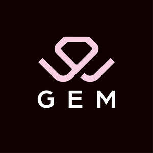
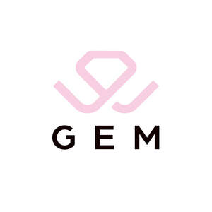
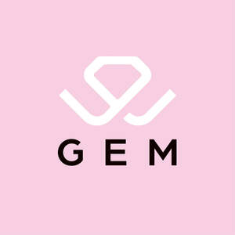

Trade Mark Journal No.2025/042 17 October 2025
UK00004241157 29 July 2025 (35)
Mark 1

Mark 2

Mark 3

- Class 35
- Marketing services; Advertising and marketing services; Business marketing services; Marketing agency services; Marketing advisory services; Marketing consultation services; Business marketing consulting services; Advertising, marketing and promotion services; Marketing, advertising and promotion services; Business marketing consultation services; On-line advertising and marketing services; Advertising, promotional and marketing services; Advertising, marketing and promotional services; Marketing, advertising, and promotional services; Advertising services; Direct marketing services; Advertising, marketing and promotional consultancy, advisory and assistance services; Consulting services relating to marketing; Consultancy services relating to advertising, publicity and marketing; Consulting services in the field of Internet marketing; Advertising services for the promotion of e-commerce; Advisory services relating to marketing; Advertising and promotion services; Digital advertising services; Advertising and promotion services and related consulting; Advertising and promotional services; Promotional and advertising services; Promotional advertising services; Advertising and marketing services provided via communications channels; Marketing services in the field of restaurants; Online advertising services; Marketing services in the field of travel; Creative marketing plan development services; Sales promotion services; Consultancy relating to advertising and promotion services; Advertising and marketing consultancy; Advertising and publicity services; Services of advertising agencies; Advertising agency services; Business consultancy services relating to the marketing of fund raising campaigns; Marketing; Promotional services; Graphic advertising services; Promotion services; Marketing consultancy; Providing advertising services; Business marketing consultancy; Consultancy services regarding business strategies; Search engine marketing services; Marketing consulting; Advertising and marketing services provided by means of social media; Consulting services in the field of development of advertising concepts; Commercial consultancy services; Marketing assistance; Brand strategy services; Advertising particularly services for the promotion of goods; Business consultancy services relating to product development; Advertising and marketing services provided by means of blogging; Marketing services relating to esports events; Advertising and marketing; Advisory services relating to advertising; Advertising, promotional and public relations services; Advisory services relating to sales promotion; Brand creation services (advertising and promotion); Advertising services relating to the travel industries; Business consultancy services for digital transformation; Influencer marketing; Referral marketing; Digital marketing; Online marketing; Product marketing; Internet marketing; Promotional marketing; Marketing research; Advertising copywriting; Direct marketing; Distribution of advertising, marketing and promotional material; Marketing management advice; Database marketing; Copywriting; Marketing research in the fields of cosmetics, perfumery and beauty products; Advice in the field of business management and marketing; Marketing advice; Direct marketing consulting; Marketing analysis; Targeted marketing; Investigations of marketing strategy; Trade marketing [other than selling]; Marketing research services; Marketing forecasting; Marketing information; Event marketing; Consultancy relating to marketing; Marketing studies; Providing marketing consulting in the field of social media; Providing advice in the field of business management and marketing; Marketing services in the field of web site traffic optimization; Marketing plan development ; Development of marketing concepts; Copywriting for advertising and promotional purposes; Distribution of advertising material by post; Research services relating to advertising and marketing; Professional consultancy relating to marketing; Production of video recordings for marketing purposes; Video recordings for marketing purposes (Production of -); Marketing research and analysis; Marketing research or analysis; Promotional marketing services using audiovisual media; Marketing analysis services; Advice relating to marketing management; Consultancy regarding advertising communications strategy; Consumer profiling for commercial or marketing purposes; Search engine optimisation for sales promotion; Planning of marketing strategies; Marketing the goods and services of others; Business promotion services; Business strategy services; Modeling services for advertising or sales promotion; Advertising services relating to the provision of business; Research services relating to advertising.
Gemma Edwards